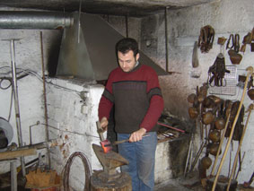

| Kουδουνάδικα  Τα κουδούνια της ¶μφισσας υπήρξαν περιζήτητα σε πολλές περιοχές της Ελλάδας αλλά και γενικότερα των Βαλκανίων λόγω της ποιότητας του ήχου τους. Χαρακτηριστικό κάθε κοπαδιού αποτελούσε ο συνολικός ήχος των κουδουνιών, η “ζυγιά”, όπως την αποκαλούσαν οι τσελιγκάδες. Με εργαλεία που κληρονόμησε από παλιούς τεχνίτες, ο Χρήστος Παπαδήμας, συνεχίζει την τέχνη με μεράκι και μαεστρία. |
||